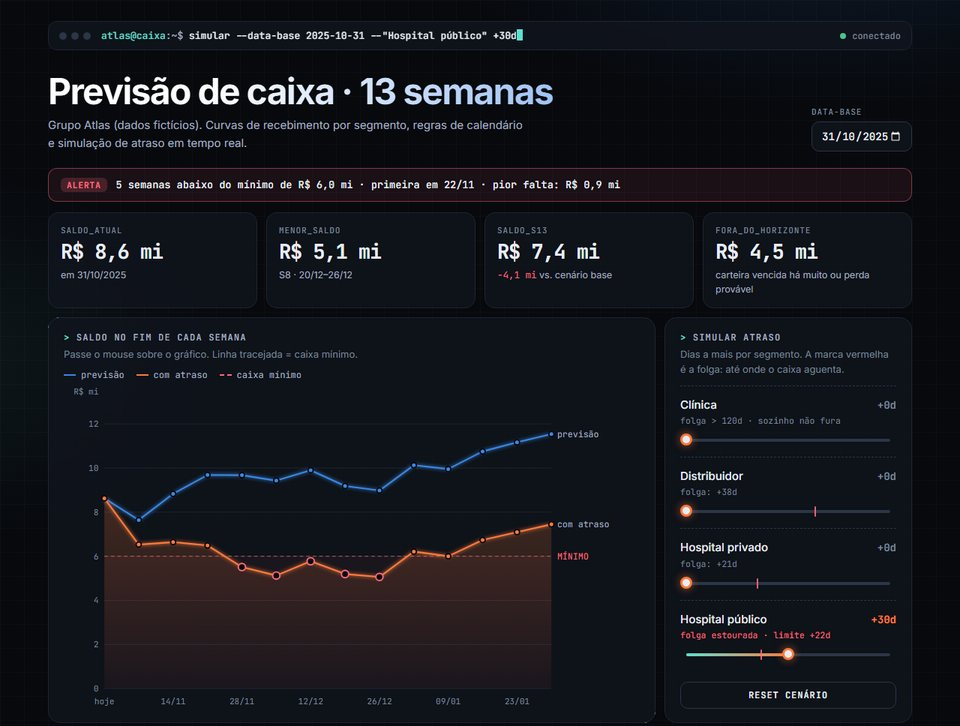
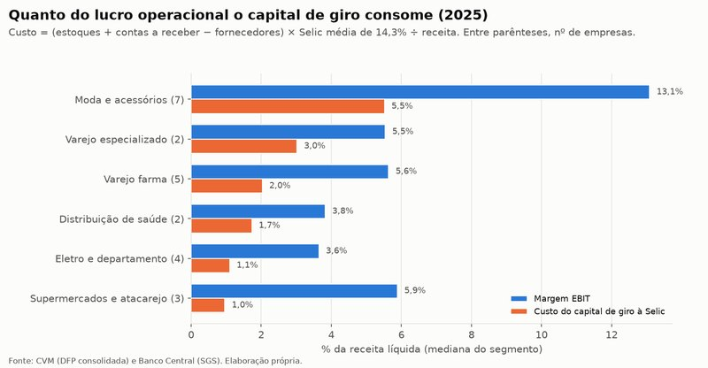

Automação de processos
O que é manual e repetitivo vira rotina automática. A conferência do razão, que levava dias, passou a levar minutos — e já encontrou lançamentos duplicados e classificações erradas.
Ver na prática: Fechamento automatizado →Há mais de 4 anos trabalho com controladoria e automação de processos. Acredito que, com
tecnologia
e um pouco de
criatividade,
ideias viram mudanças reais.

// O que faço
O que é manual e repetitivo vira rotina automática. A conferência do razão, que levava dias, passou a levar minutos — e já encontrou lançamentos duplicados e classificações erradas.
Ver na prática: Fechamento automatizado →Confiro o que entra no fechamento, para o número chegar certo a quem decide.
Ver na prática: lançamentos duplicados encontrados →Onde a empresa ganha e onde perde dinheiro.
Ver na prática: Painel de controladoria →Não basta mostrar o desvio: explico de onde ele vem.
Ver na prática: Orçado × realizado →Rentabilidade de cada um, para decidir onde vale investir.
// Ferramentas
Análise e relatórios
Dados e automação
Inteligência artificial
// Projetos pessoais
Problemas reais de controladoria, com dados fictícios ou públicos. Clique em um projeto para ver os detalhes.



// Contato